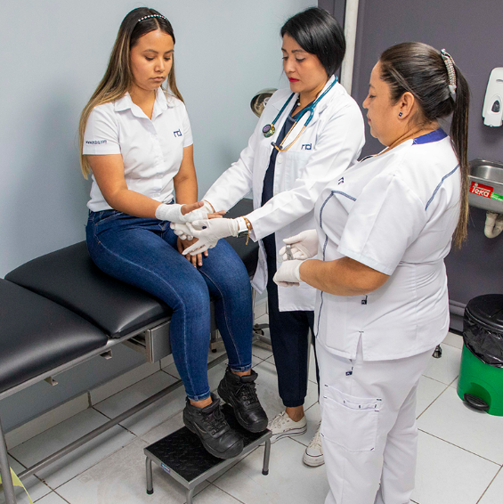

Cuidamos de tu salud en el INFRAMEN.
Med Institucional es una plataforma creada para que los alumnos y personal estudiantil puedan ver información sobre nuestra enfermeria institucional gratuita para todos los alumnos.
¿Qué necesitas saber?
Encuentra rápidamente la información relacionada con la enfermería institucional.

Una atención más organizada y accesible.
Med Institucional nace como una propuesta para mejorar la gestión de la enfermería institucional y facilitar el acceso a información importante para la comunidad educativa.
La plataforma permite diferenciar la información pública destinada a estudiantes y personal de las funciones administrativas utilizadas exclusivamente por el personal autorizado.
Antes de acudir a enfermería
Consulta los horarios y la disponibilidad de atención para evitar desplazamientos innecesarios.